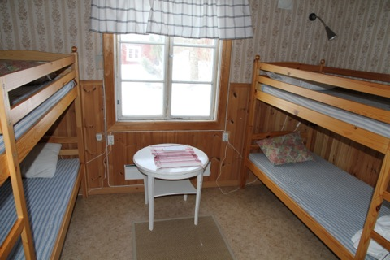

Tillsynsmannatorpet Västergärdet
Strax väster om lägergården Risön ligger det gamla tillsynsmannatorpet Västergärdet. Tillsynsmannatorpet är en perfekt utgångspunkt för uggelexkursioner eller andra utflykter i Florarna. Slaguggla finns normalt med ett revir i de närmaste omgivningarna.Tillsynsmannatorpet består av fyra hus. Dass/vedbod, källarbod, förråd och bostadshus.
Ursprungligen ett boställe sedan cirka 1910 och från 1970-talet utgångspunkten för Domänverkets och senare Länsstyrelsens tillsynsmän i naturreservatet.
Tillsynsmannatorpet kan hyras året runt av föreningar och privat personer. Uthyrare är Länsstyrelsen i Uppsala län. För mer information se Länsstyrelsen pdf-folder på sidan dokument om Florarna.
Det finns fyra sängplatser själva tillsynsmannatorpet och fyra i den gamla källarboden.
Åtskilliga är de gånger jag haft förmånen att följa med de tidigare tillsynsmännen Hans Strand och Holger Hagel ut i Florarna med utgångspunkt från tillsynsmannatorpet Västergärdet. Ett antal övernattningar har även skett där genom åren. Hans Strand berättade att han ofta hört slaguggla från bron på Västergärdet. Det var på 1970-talet…än idag kan du med lite tur höra slagugglan ropa vid Västergärdet. I början av april 2014 hördes slagugglan en natt med månsken....på morgonkanten hördes ett slagugglepar.
En lagom liten sväng genom skogen i anslutning till lägergården Risön och tillsynsmannatorpet Västergärdet kan du få genom att gå ”Hagels runda”. Se sidan ”leder och stigar”.
Jag har nattarbetat en stor del av mitt liv…vilket gör att jag kanske inte är direkt mörkrädd…..det är inte heller de vänner som också varit med mig vid ett par tillfällen….men två av mina vänner, Mikael och Per, har oberoende av varandra upplevt att någon stått och tittat på dem mitt i mörka natten när de sovit och vaknat till av att de känt en närvaro i kammaren på Västergärdet…..
Själv har jag aldrig upplevt detta.
Tillsynsmannatorpet Västergärdet. Foto: Ronny Fredriksson
Tillsynsmannatorpet Västergärdet från utsidan. Foto: Ronny Fredriksson
Jag med goda kamraterna Peter och Åke framför tillsynsmannatorpet. Foto: Ronny Fredriksson
Köket med den gamla spiskåpan och vedspisen i förgrunden. Foto: Ronny Fredriksson
Hög mysfaktor i tillsynsmannatorpet. Foto: Ronny Fredriksson
Vedspisen ”sjunger” som mormor brukade säga. Foto: Ronny Fredriksson
Funktionellt kök med elspis, diskbänk och kylskåp. Det finns porslin och bestick. Foto: Ronny Fredriksson

Kammaren med fyra bäddar. Foto: Ronny Fredriksson
Badrum med handfat och WC. Foto: Ronny Fredriksson
Badrummets duschkabin. Foto: Ronny Fredriksson
Interiör från källarboden med bord och stolar. Foto: Ronny Fredriksson
Fyra bäddar i källarboden. Foto: Ronny Fredriksson
Kamraten Peter Brunberg åter frukost i tillsynsmannatorpet Västergärdet. Foto: Ronny Fredriksson
Utedasset och vedboden vid tillsynsmannatorpet Västergärdet. Foto: Ronny Fredriksson
Utedasset :-) Foto: Ronny Fredriksson